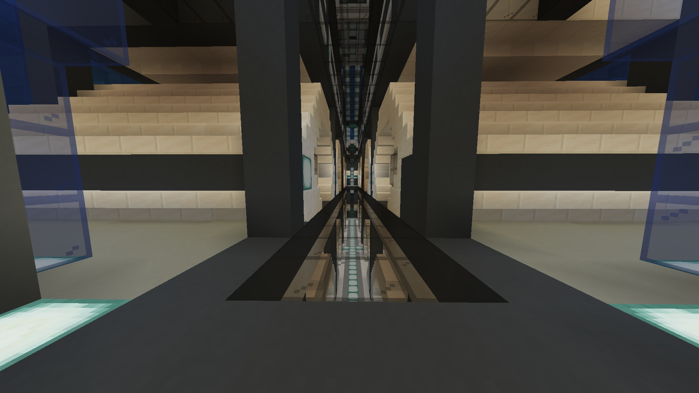
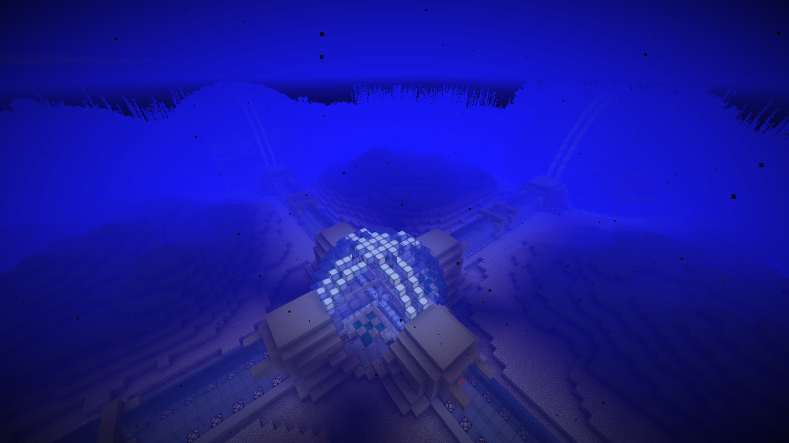
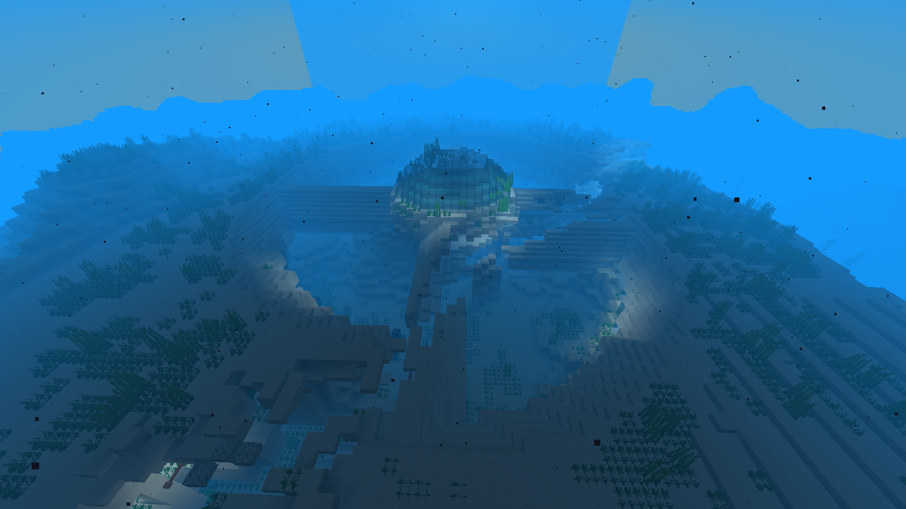
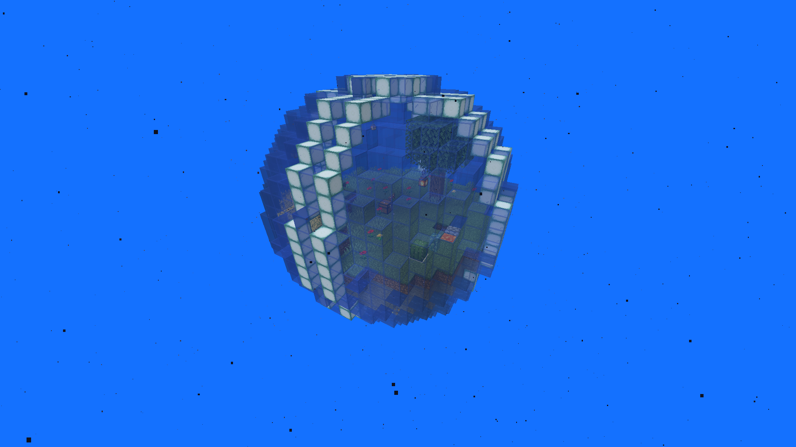
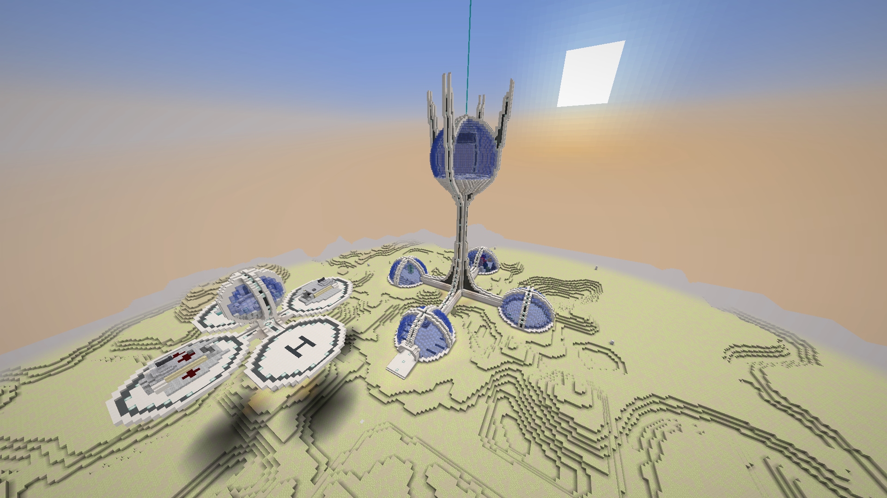
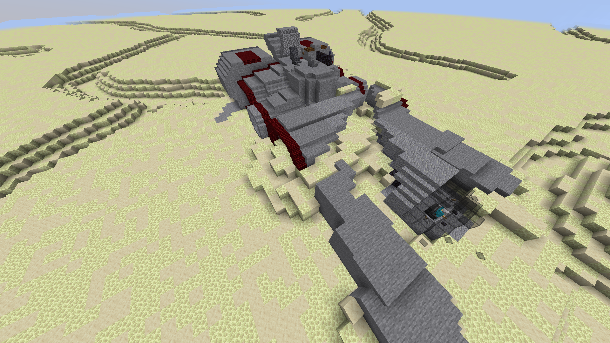
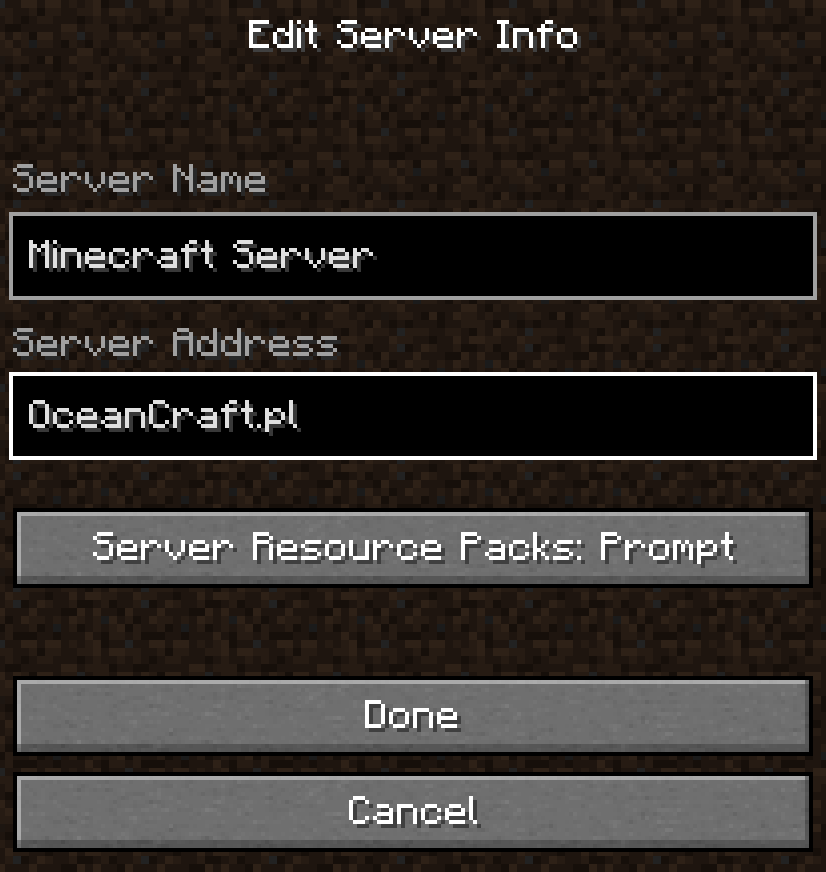

W roku 6030 jako dziecko byłeś szkolony na super żołnierza. W czasie twojego szkolenia planetę Ziemie zaatakowali kosmici. Ludzkość będąca świadoma swojej nieuniknionej porażki zahibernowała młodych adeptów i wysłała w statku w kosmos. Po wielu latach krążownik zostaje odnaleziony a ty przebudzony. Zostajesz przetransportowany na Arke "Nadzieja". I tam rozpoczyna się twoja przygoda...


Zdobądź w sobie odwage ducha i zanurkuj w głębiny oceanu planety Nasau, ciekawe co tam znajdziesz...

Korzystając z pozyskałych materiałów oraz fundamentów opracowanych przez naszych naukowców stwórz własną samowystarczalną podwodną Arkę!

Znudziły Ci się głebiny Nasau? Nie ma problemu! Spróbuj odbić od innych cywilizacji inne planety, uważaj łatwo nie będzie!

Brakuję Ci materiałów? Spokojnie! Może znajdziesz coś porzytecznego w robitkach obcych na innych planetach!
Aby dołączyć na serwer wystarczy, że wpiszesz nasze IP w wyszukiwarce serwerów minecraft.
OceanCraft.pl
